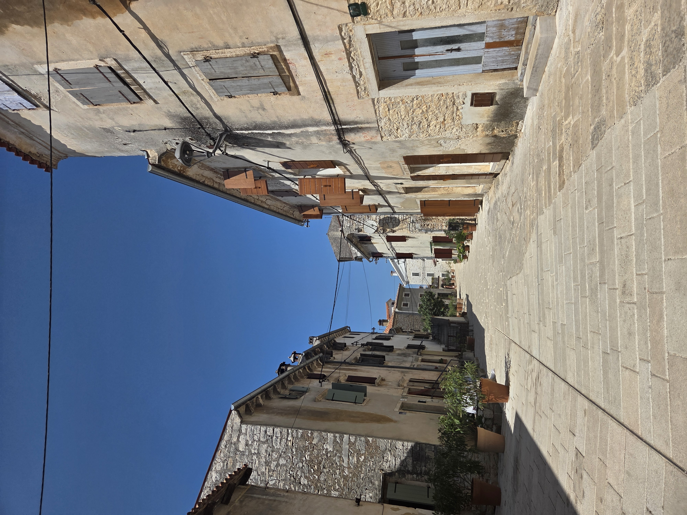

Over mij
Mijn naam is [jouw naam]. Ik ben [jouw leeftijd] jaar oud en ik zit op [naam van je school].
Ik heb deze website gemaakt voor het vak informatica. Op deze website leg ik verschillende onderwerpen uit die met computers en technologie te maken hebben.
In het menu hierboven staan de verschillende onderwerpen. Je kunt bijvoorbeeld meer lezen over het binaire stelsel, kleurmodellen, compressie en kunstmatige intelligentie.

Wat ga ik op deze website uitleggen?
Ik behandel onder andere hoe computers informatie verwerken, hoe het binaire stelsel werkt en hoe afbeeldingen digitaal worden opgeslagen.